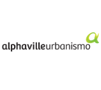
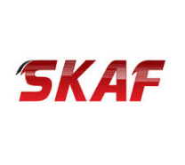
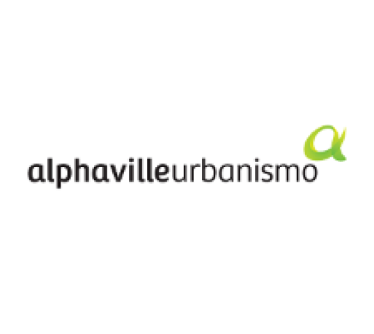
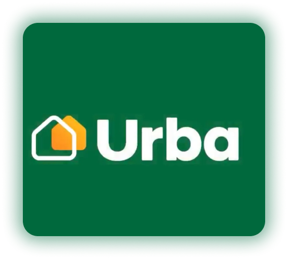
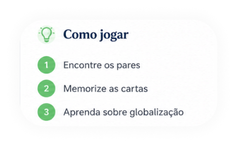

AMBIENTE
Meio Ambiente
Como as cidades lidam com resíduos, arborização, ilhas de calor e mudanças climáticas.
AbrirCIDADE • SOCIEDADE • FUTURO
Plataforma digital para a análise e o manejo da infraestrutura em cidades com alto crescimento populacional.
Auxiliamos cidadãos, estudantes e gestores na compreensão de soluções urbanas sustentáveis e personalizadas. Nossos conteúdos são baseados em estudos urbanísticos e evidências científicas.
Explorar temas02 — PROJETO
Somos um portal de divulgação científica e jornalismo urbano. Acreditamos que a cidade pertence a todos e, por isso, traduzimos conceitos complexos de arquitetura, engenharia viária e ecologia em conteúdos acessíveis.
Nosso objetivo é democratizar o debate sobre o espaço público, estimulando soluções inteligentes para os desafios habitacionais e climáticos do nosso século.
Cada território cresce de um jeito. Entender essas diferenças é o primeiro passo para planejar melhor.
03 — TEMAS
As quatro grandes áreas de estudo que ajudam a compreender o funcionamento das cidades.
Como as cidades lidam com resíduos, arborização, ilhas de calor e mudanças climáticas.
Abrir
Transporte público, infraestrutura viária, ciclovias e os desafios do trânsito nas metrópoles.
Abrir
Planos Diretores, zoneamento, gentrificação e o direito à moradia nas áreas urbanas.
Abrir
Tecnologia, dados e infraestrutura conectada para tornar as cidades mais eficientes e humanas.
Abrir04 — ARTIGOS
HISTÓRIA URBANA
Como industrialização, êxodo rural e crescimento populacional transformaram as cidades brasileiras no século XX.
Ler artigoMEIO AMBIENTE
Expansão urbana, impermeabilização do solo, poluição e ilhas de calor explicadas de forma direta.
Ler artigoSOCIEDADE
Déficit habitacional, segregação socioespacial e o acesso desigual aos serviços públicos.
Ler artigoMOBILIDADE
Transporte coletivo, ciclovias e alternativas sustentáveis para melhorar a circulação de pessoas.
Ler artigoTECNOLOGIA
Como dados e tecnologia podem contribuir para uma cidade eficiente e voltada à qualidade de vida.
Ler artigo05 — EMPRESAS
Organizações ligadas à construção, mobilidade, planejamento e transformação dos espaços urbanos.



A Alphaville é uma das maiores empresas de urbanização do Brasil e foi pioneira em bairros planejados e condomínios horizontais. Atua há mais de 40 anos e está presente em mais de 20 estados.

A Urba é a empresa de desenvolvimento urbano da MRV&CO. Criada em 2012, atua com loteamentos e bairros planejados mais acessíveis.
06 — DÚVIDAS
Respostas rápidas para conceitos que aparecem ao longo do projeto.
É o processo de valorização de uma região que aumenta o custo de vida e pode afastar os moradores que já viviam ali.
Ele orienta o crescimento urbano e define regras para moradia, transporte, infraestrutura e uso do solo.
O espaço público é destinado ao uso coletivo; o privado pertence a pessoas ou organizações e tem acesso definido por seus responsáveis.
É uma cidade que usa planejamento, tecnologia e dados para melhorar serviços, sustentabilidade e qualidade de vida.
07 — EXPERIÊNCIA INTERATIVA
Aprenda sobre conexões globais encontrando os pares corretos.

08 — EQUIPE
Projeto desenvolvido por estudantes para tornar o debate urbano mais acessível.
Conteúdo e pesquisa
Design e desenvolvimento
Conteúdo e pesquisa
Conteúdo e pesquisa